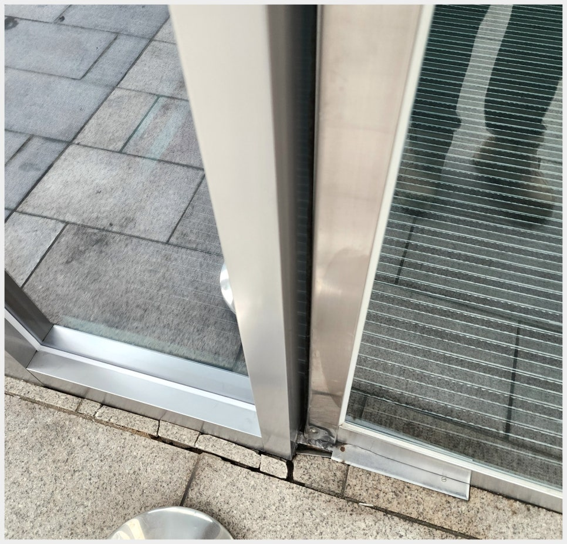
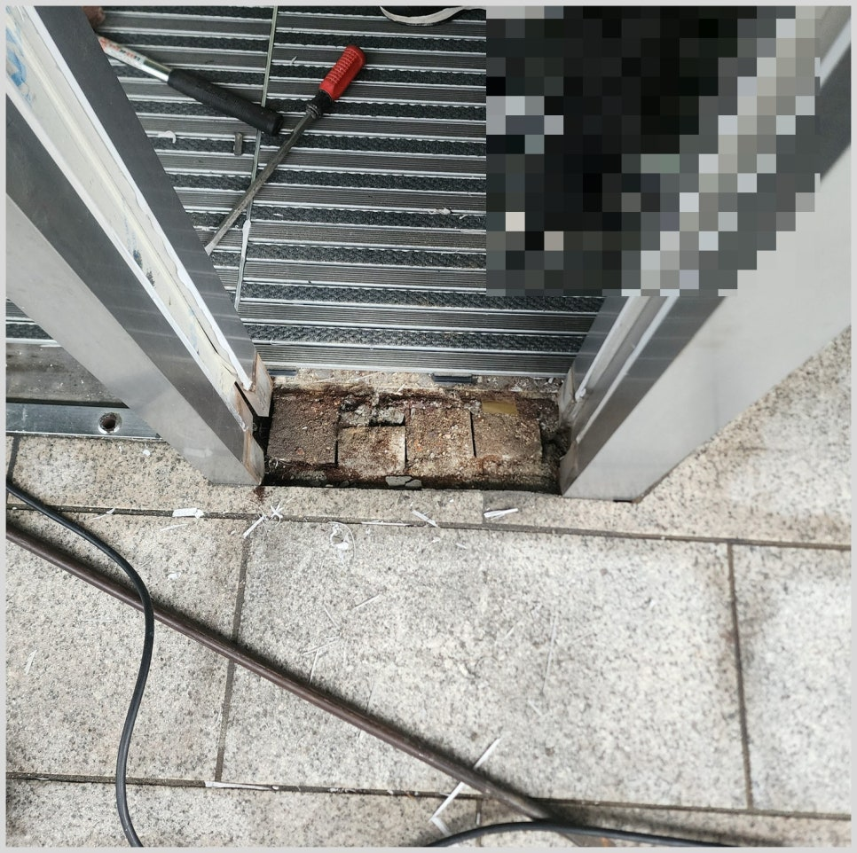

스텐도어는 스테인리스 틀 안에 유리를 끼운 출입문이라, 틀이 한 번 꺾이면 문짝만 다시 다는 것으로는 해결되지 않는 경우가 많습니다. 서울 송파구의 한 건물은 앞에서 주차하던 차가 뒤로 밀리며 입구 기둥 아랫부분을 받았고, 다친 사람은 없었지만 문을 제대로 쓸 수 없었습니다. 휜 기둥과 그 기둥에 맞물린 문틀을 떼어 내고 새 프레임을 세웠습니다.
한눈에 보기
| 작업 | 차량에 받혀 휜 스테인리스 기둥·문틀 교체 |
|---|---|
| 지역 | 서울 송파구 |
| 장소 | 건물 1층 입구(문 한 짝, 양옆 고정창, 위 상부창이 모두 스텐 틀 안에 든 구조) |
| 문 구조 | 바닥에 묻힌 플로어힌지와 위쪽 축으로 여닫는 방식 |
| 유리 | 간봉이 들어간 복층유리(작업 전 먼저 빼냄) |
| 작업 시간 | 아침 7시 25분 도착, 저녁 5시 40분 무렵 마무리(하루), 사다리 두 대 |




차에 받힌 상가문수리, 꺾인 기둥을 펴서 쓰면 안 되나요?
스테인리스는 한 번 접히면 다시 펴도 주름 자국이 남고, 기둥이 아주 조금 비틀린 채로 굳기 쉽습니다.
이 입구 문은 바닥 플로어힌지와 위쪽 축이 정확히 한 줄에 있어야 열고 닫힙니다. 기둥이 살짝만 기울어도 문이 처지거나 끝까지 안 닫히기 때문에, 펴서 쓰는 대신 기둥과 맞물린 문틀을 새것으로 바꿨습니다.
보험으로 처리하려면 수리 전에 무엇을 챙기나요?
차가 건물 출입문을 받은 사고는 보통 그 차의 자동차보험 대물배상으로 처리합니다. 보험사 접수번호, 고치기 전 파손 사진, 수리 견적서가 있으면 접수가 수월합니다.
사진은 휜 자리 가까이, 입구 전체가 들어오게 멀리, 여러 방향에서 남겨 두세요. 수리가 끝나면 그 모습은 다시 찍을 수 없습니다.
이 현장 작업 순서
- 7시 25분 도착 후 꺾인 기둥 밑동, 벌어진 아래 문틀 모서리, 밀린 문짝을 사진으로 남겼습니다.
- 8시, 틀을 풀기 전에 복층유리부터 빼냈습니다. 유리를 낀 채 기둥을 건드리면 휜 쪽으로 힘이 몰려 깨질 수 있습니다. 새 틀 홈에 맞추려고 유리 두께도 다시 쟀습니다.
- 9시부터 11시까지 사다리 두 대를 세우고 위쪽부터 풀었습니다. 기둥 밑동은 바닥 돌 속에 박혀 있어 둘레 돌을 깨고서야 빠졌습니다.
- 오후 2시 무렵 보호 필름을 두른 새 스텐 프레임이 섰고, 문 위 마감판의 먼지와 손자국도 닦았습니다.
- 17시 43분, 기둥이 곧은지, 아래 모서리가 맞물렸는지, 상부창 위 라인이 한 줄인지 확인하고 마쳤습니다.
스텐도어 출입문교체 비용은 어떻게 정해지나요?
어디까지 휘었는지가 먼저입니다. 문짝만 다시 다는 경우와 기둥·문틀까지 바꾸는 경우는 일의 양이 크게 다릅니다.
기둥이 바닥 돌 속에 묻혀 있으면 돌을 깨고 다시 메우는 일이 붙고, 입구가 높으면 사다리와 손이 더 듭니다. 빼낸 유리를 다시 쓸 수 있는지도 금액을 바꿉니다. 그래서 사진과 대략 크기를 보고 견적을 드리며, 보험으로 처리하실 예정이면 처음 연락하실 때 함께 알려 주세요.
자주 묻는 질문
- Q. 새 스텐 틀에 붙은 보호 필름은 언제 떼나요?
- 모든 마감이 끝날 때까지 붙여 둡니다. 스테인리스 표면은 공구에 한 번 긁히면 자국이 오래 남기 때문입니다.
- Q. 문이 끝까지 안 닫히는 것도 틀 문제일 수 있나요?
- 플로어힌지 방식 문은 기둥이 조금만 기울어도 문이 처지거나 끝까지 닫히지 않습니다. 사고 뒤 문이 뻑뻑해졌다면 문짝보다 기둥과 문틀 상태를 먼저 봐야 합니다.